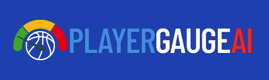
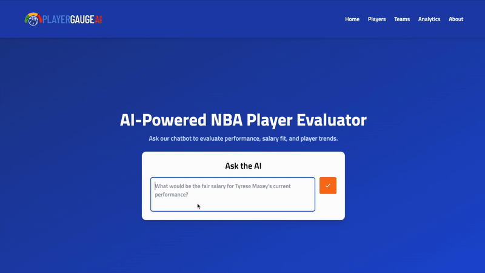
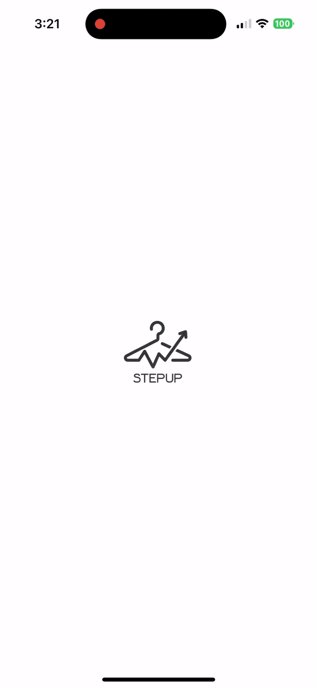

Projects
Click on a project to expand and view details.
-
Dec 2024 – Present
PlayerGaugeAI is a comprehensive, data-driven platform designed to deliver holistic insights into NBA player economics. At its core, the system leverages a robust XGBoost model trained on historical performance statistics to forecast player salaries. This quantitative engine is augmented by a Hybrid RAG architecture (Retrieval-Augmented Generation) that ingests unstructured qualitative data—such as analyst reports and scouting narratives—via a FAISS vector store. The system features an intelligent Agentic Orchestration layer built with LangChain, which dynamically routes user queries between a PostgreSQL database (for statistical precision) and the vector store (for contextual nuance). This allows the platform to reconcile mathematical model outputs with human expert consensus, automatically identifying market anomalies and explaining value discrepancies. Engineered as a production-ready full-stack solution, the application is containerized with Docker and powered by a Flask backend. The frontend, built with React.js and styled with Tailwind CSS, delivers dynamic Plotly visualizations and an interactive chatbot, enabling users to explore real-time undervaluation metrics backed by both quantitative forecasts and retrieved qualitative evidence. View ProjectIN DEVELOPMENT


Player Dashboard with Performance/Salary Prediction -
Jan 2025 – May 2025
LLM-Enhanced NLP Parser for Sacred Harp Minutes
Developed an LLM-enhanced NLP pipeline to extract and analyze 30 years of Sacred Harp singing records, leveraging spaCy, Ollama, and RapidFuzz for accurate name matching and efficient historical text processing View ProjectIN DEVELOPMENT
-
May 2023 – Present
Revolutionizing personal styling with a fashion dilemma iOS app built in SwiftUI.
Developed an AI-powered app that curates outfits based on shoes, user preferences, weather, and occasions. Implemented interactive features for personalized suggestions and added an Explore page to highlight trending fashion and promote sustainable wardrobe choices.View Project
User Preferences Styling Occasion-Based Styling
Occasion-Based Styling Shoe-Based Styling
Shoe-Based Styling -
Dec 2020 – Dec 2022
View Project
Developed AI models to detect unconscious bias and respond to cyberbullying on social networks. Adapted a movie review sentiment analysis model to assess and address user sentiment in online interactions. Conducted data analysis and trained machine learning models using Python and Google Colab. Awards from Johnson & Johnson for Behavioral Sciences (EmbRACE) and the American Psychological Association (Edith).